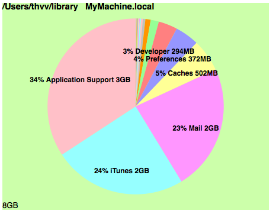

2023-11-08
diskpie displays a pie chart showing the total disk usage of the current working directory and how it is divided among subdirectories. You invoke it from the Mac OS X, Linux, or FreeBSD command line and it opens up a window describing the current working directory. It requires Perl and a browser that supports JavaScript and the HTML5 CANVAS element.

The chart sorts the pie wedges, smallest first, and colors the wedges with different colors. The chart is titled with the directory and machine name at the top, and subtitled with the total size at the bottom. Each wedge is titled with the percentage, directory name, and total size contained in the directory, if it's big enough. The files not in any subdirectory are collected as "(loose)".
To use it, in a shell window, type cd wherever ; diskpie
diskpie calls the Unix du command to list disk usage. The output of this command is piped through sort into a Perl program, which writes out a temporary HTML page and feeds it to your browser to display it. When the browser displays the page, it invokes the JavaScript from piecanvas.js to display the chart.
To install this on your machine,
The shell script works on Mac OS X or (some flavors of) Linux. You may need to edit it if your Linux works different from mine. (You could probably get this working on a Windows box, if you installed Cygwin and Perl, and changed the shell script to be a BAT file.)
The shell, Perl, and JavaScript in the tarfile are open source files. piecanvas.js has an Apache license. Share and enjoy.
This little hack uses a Javascript pie chart generator I wrote for web applications.